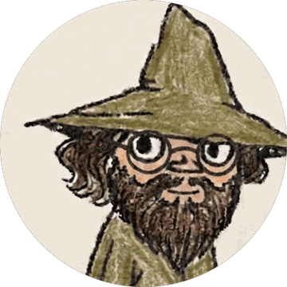
wander
I make small things, mostly for a little E Ink phone, and tinker with a few home servers that several of them talk to. They keep to themselves — no accounts, nothing sent to me, nothing that needs looking after. Most of the work is deciding what to leave out. I am so glad you stopped by to check out my offerings. Something broken? Open an issue, or write to email@wanderthe.dev. Happy trails.
小さなものを作っている。ほとんどは小さな電子ペーパーの電話のためのもので、そのいくつかがやりとりする家のサーバーも少しいじっている。どれも自分のことだけをする——アカウントも、私に送られるものも、世話の要るものもない。仕事の大半は、何を省くかを決めること。ここにあるものを見に立ち寄ってくれて、本当にうれしい。壊れているところがあれば、issueを開くか、email@wanderthe.devまで。よい旅を。
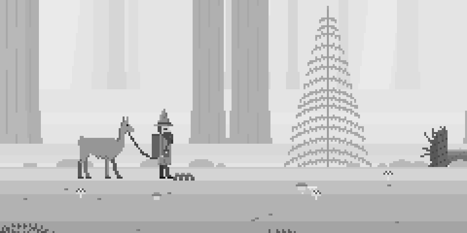
Wander — Coming 13 November 2026— 2026年11月13日に
A walk in the redwoods with Kumo the llama. It takes after Fumito Ueda's ICO, Might and Delight's Book of Travels, Superbrothers' Sword & Sworcery, and the way Jason Rohrer lets a game's rules carry its meaning.
One walk is one day, about twelve minutes by the real clock, from the morning mist to dusk. There is nothing to win and no words on the screen. Gather mushrooms until the basket is full, then leave the rest. Hold on an old fire ring for a fire, and on the fire for tea. Stand still and Kumo grazes, hums, and finds the chanterelles you walked past; its ear turns toward what you would have missed. Wait, and a slug crosses the path, a deer stops to listen, the far wood opens up. The seasons follow the calendar, and the weather comes from Sky when it is on the phone. At dusk the lantern comes on and you make camp. Open the game that night and the tent is there, Kumo asleep beside it, and the notebook has drawn everything you met.
ラマのクモとレッドウッドの森を歩く。手本は上田文人の『ICO』、Might and DelightのBook of Travels、SuperbrothersのSword & Sworcery、そしてゲームの決まりごとに意味を担わせるジェイソン・ローラーのやり方。
一度の散歩は一日。朝の霧から夕暮れまで、本当の時計でおよそ十二分。勝ち負けはなく、画面に言葉もない。籠がいっぱいになるまできのこを集め、あとは残しておく。古い焚き火の跡を長押しすれば火が熾り、火を長押しすればお茶。立ち止まれば、クモは草を食み、ハミングし、見落としたアンズタケを見つける。その耳は、気づかなかったものの方へ向く。待っていれば、ナメクジが道を横切り、鹿が立ち止まって耳をすまし、遠くの森がひらける。季節は暦のとおりに、天気は電話に空模様があればそこから。夕暮れにはランタンが灯り、野営をする。その夜にもう一度開けば、テントがあり、そばでクモが眠っていて、ノートには出会ったものがみな描かれている。
For the Mudita Kompakt
The Kompakt is an Android phone with a black-and-white E Ink screen. Everything here is drawn for it: nothing animates, and every page reads in sunlight. A few settings the phone keeps out of reach, such as the hidden browser and the default apps, can be changed from a computer over USB on Kompakt tweaks.
Each app has a download link, and Obtainium can keep them updated from their GitHub pages. I put out fixes as soon as they are ready, so updates come often. If Obtainium says "rate limit exceeded", give it a free GitHub personal access token in its settings (no permissions needed). To update by hand, download the newer APK and open it: it installs over the old one and keeps your data.
Everyday
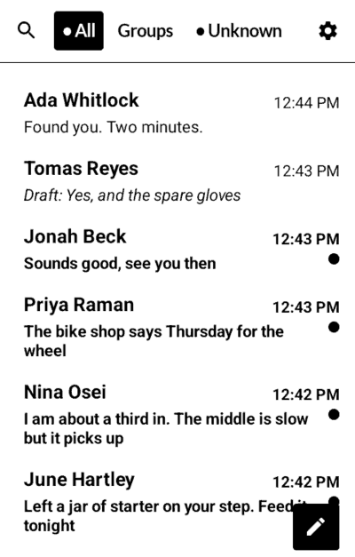
Messaging
SMS, MMS and Signal in one inbox, and a page your phone serves to your own computer so you can text from a keyboard. Signal voice calls too. With Glance, what is unread on the lock screen; with Whereabouts, Send where I am.
SMS・MMS・Signalをひとつの受信箱に。電話が自分のパソコンにページを出すので、キーボードからも送れる。Signalは音声通話も。一目と使えば、未読がロック画面に。居場所と使えば、今いる場所を送れる。
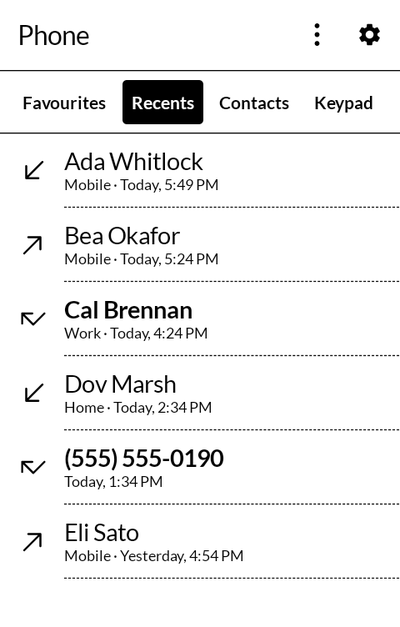
Phone
Favourites, Recents, Contacts and a keypad. Nothing in a list dials on a touch, a call is answered by holding the button down, and numbers you don't know can ring, stay silent or be turned away. The other half of Messaging.
お気に入り、履歴、連絡先、キーパッド。リストに触れただけでは発信しない。電話はボタンを長押しして出る。知らない番号は、鳴らす・黙らせる・断るから選べる。言伝の片割れ。
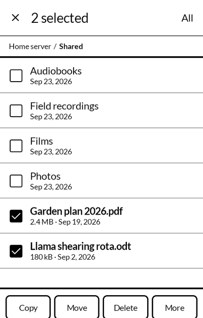
Files
A file manager, with the shared drives on your own servers as places like any other. A copy is written whole or not at all. PDFs open here and print through the phone's print service; a track (.gpx) opens in Topo.
ファイル管理。自分のサーバーの共有ドライブも、ほかの場所と同じように並ぶ。コピーは丸ごと書かれるか、まったく書かれないか。PDFはここで読めて、電話の印刷サービスで印刷も。軌跡（.gpx）は地形で開く。
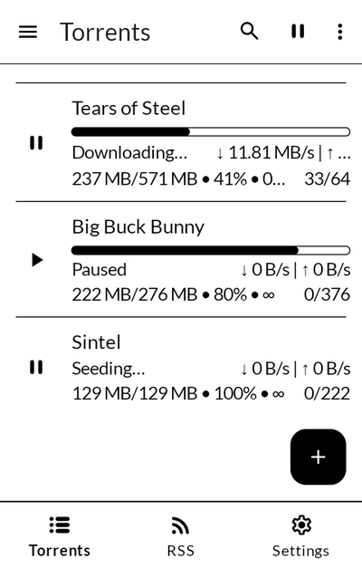
Torrents
Magnet links and torrent files, choosing which files to fetch, RSS feeds, a scheduler and a proxy with a kill switch. LibreTorrent underneath, in black and white, with nothing that slides. Others in a torrent see your internet address; nothing else goes anywhere.
マグネットリンクとトレントファイル。取ってくるファイルを選べて、RSSフィード、スケジューラー、キルスイッチつきのプロキシもある。中身はLibreTorrent。白と黒だけで、画面は滑らない。同じトレントの相手にはインターネット上のアドレスが見えるが、ほかには何も送られない。
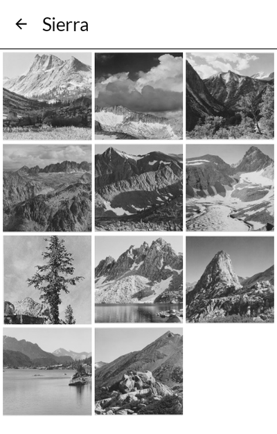
Gallery
The pictures on the phone, by folder, a page at a time. Crop, turn or write on one, and it is saved beside the original. With your own Immich server, its albums and timeline too, and the camera backed up.
電話の中の写真を、フォルダごとに一枚ずつ。切り抜き、回し、書き込んだものは元の写真の隣に保存される。自分のImmichサーバーがあれば、そのアルバムとタイムラインも並び、カメラの写真をそこへバックアップ。
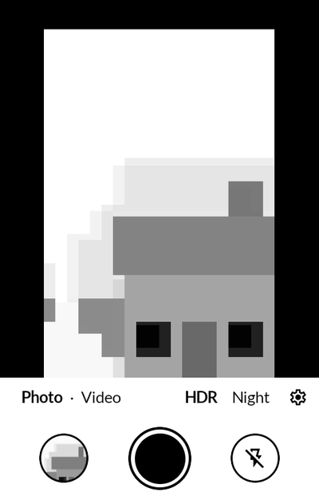
Camera
Photos and video laid out as Mudita's own camera is, with HDR, Night and QR codes read as you point. A code can go to Wallet as a card, a sign-in code to Passwords. Open Camera underneath; nothing drawn over the viewfinder.
写真と動画。画面の配置はMudita純正のカメラと同じで、HDRと夜景も。QRコードは向けるだけで読む。読んだコードは札入にカードとして、二段階認証のコードは合言葉へ。中身はOpen Camera。ファインダーの上には何も描かない。
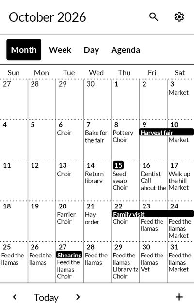
Calendar
Month, week, day and agenda, with repeats of every ordinary shape and reminders that light the screen. Your Nextcloud or other CalDAV calendar, through DAVx5. With Glance, today's events on the lock screen, and the next one once they are over.
月・週・日・予定一覧。ふつうの繰り返しはどんな形でも組め、通知は画面を灯す。NextcloudなどのCalDAVカレンダーを、DAVx5を通して。一目と使えば、今日の予定がロック画面に。終われば次の予定を。
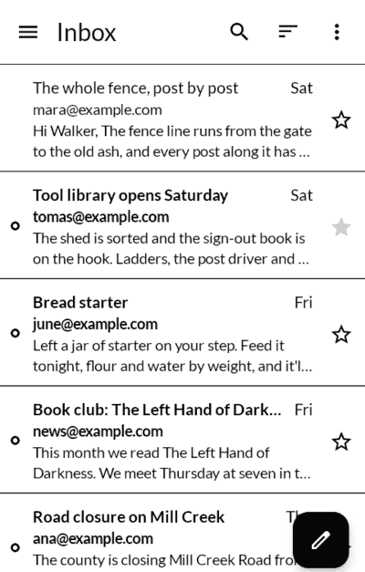
Any mail account that takes a password, read and written in black and white, a page at a time. Thunderbird for Android, redrawn for this screen. Pictures in a message load only when you ask. With Glance, what is unread on the lock screen.
パスワードで入れるメールアカウントなら何でも、白黒で、一画面ずつ読み書きする。Thunderbird for Androidを、この画面のために描き直したもの。メールの中の画像は、頼んだときだけ読み込む。一目と使えば、未読がロック画面に。
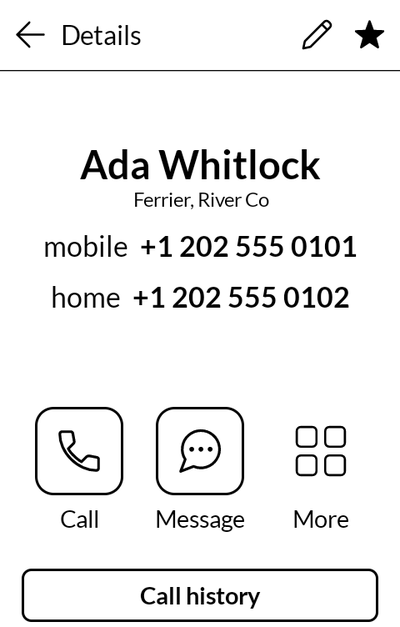
Contacts
Everyone you know, under tabs for all, favourites and groups. A person's page lists each number to call or text, then your recent calls with them. Messaging and Email reach it for every contact they need. It has no internet permission at all.
知り合いみんなを、すべて・お気に入り・グループのタブで。人のページには番号ごとに通話とメッセージ、そのあとに最近の通話。言伝も便りも、連絡先が要るときはここに来る。インターネットの権限は一切ない。
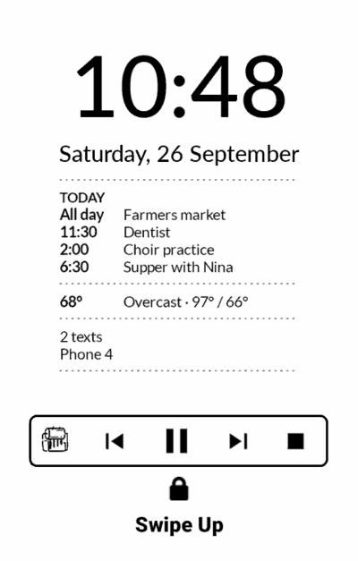
Glance
Today's events, the weather and what is unread, on the lock screen, from Calendar, Sky, Messaging and Email, with pinned notes and the next dose too, in the size you choose. Press a line to open its app; press power twice for the torch.
今日の予定、天気、未読を、ロック画面に。暦・空模様・言伝・便りから。ピン留めしたメモや次の服薬も。文字の大きさは選べる。行を押せば、そのアプリが開く。電源を二度押せばライトが点く。
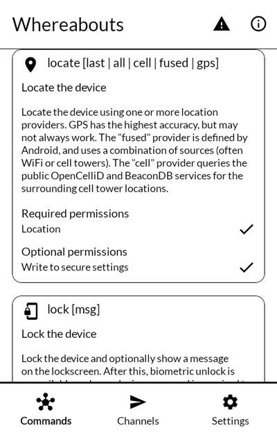
Whereabouts
Finds your phone when it is lost: where it is, a ring, a lock. With its server, the people who share with you appear on one map. Another app can ask it where you are, once, and it asks you first.
なくした電話を探す。どこにあるか、鳴らす、ロックする。専用のサーバーがあれば、共有してくれる人たちがひとつの地図に現れる。ほかのアプリが一度だけ居場所を尋ねることもでき、そのときは先にあなたに聞く。
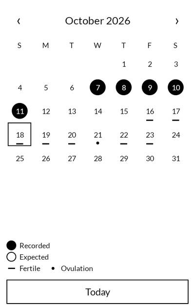
Cycle
A cycle tracker with no permissions at all. It shows what you recorded, expects what comes next, and keeps everything you write on the phone. Every day of a period is confirmed by hand, so nothing in the record is a day it guessed.
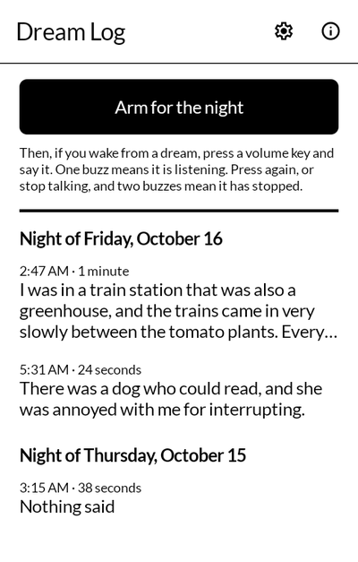
Dream Log
Arm it before sleep; if a dream wakes you, press a volume key in the dark and say it. By morning it is written down, transcribed on the phone itself. Each dream keeps its recording, and its words can go to Notes.
眠る前に構えておく。夢で目が覚めたら、暗がりで音量キーを押して話すだけ。朝には書き起こされている。文字起こしは電話の中で。夢ごとに録音が残り、言葉は覚書にも残せる。
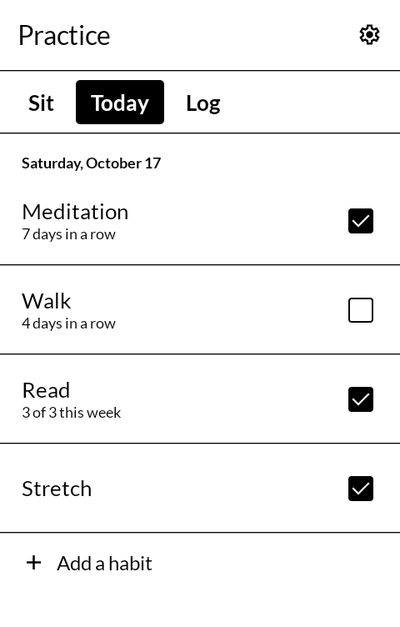
Practice
A meditation timer with a warm-up and an interval bell, and the habits you name yourself, each with a streak and a month of days. Every sitting is logged. The screen stays dark while you sit, and the bells ring on time.
準備の時間と合間の鐘がある瞑想タイマーと、自分で名付ける習慣。習慣ごとに連続日数と一か月の暦。座った時間はすべて記録される。座っている間、画面は暗いまま、鐘は時間どおりに鳴る。
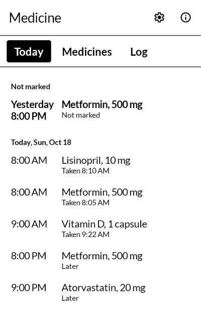
Medicine
Reminders that ring at each dose, answered from the lock screen with Taken, Skip or Snooze. Every dose goes into a log, rung or not, and a refill can go into Calendar. It reminds and keeps a record; it does not advise.
服薬の時間ごとに鳴るリマインダー。ロック画面のまま「飲んだ」「飛ばす」「あとで」。鳴っても鳴らなくても、すべての服用が記録に残る。補充の日は暦へ。知らせて記録はするが、助言はしない。
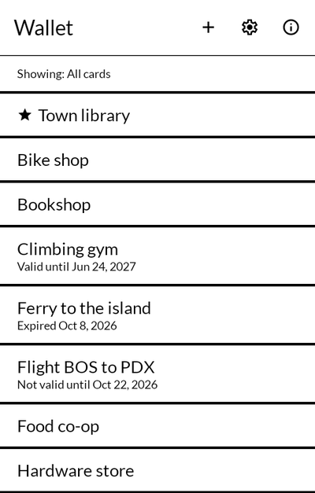
Wallet
Loyalty and library cards, tickets and boarding passes, drawn as barcodes a scanner reads off this screen. Scan one in, or read it from a picture, PDF or pass file. Catima underneath. A ticket's days can go into Calendar. No internet.
ポイントカード、図書館カード、切符、搭乗券。読み取り機がこの画面からそのまま読めるバーコードで描く。カメラで読み込むか、写真・PDF・パスファイルから。中身はCatima。切符の日付は暦へ。インターネットなし。
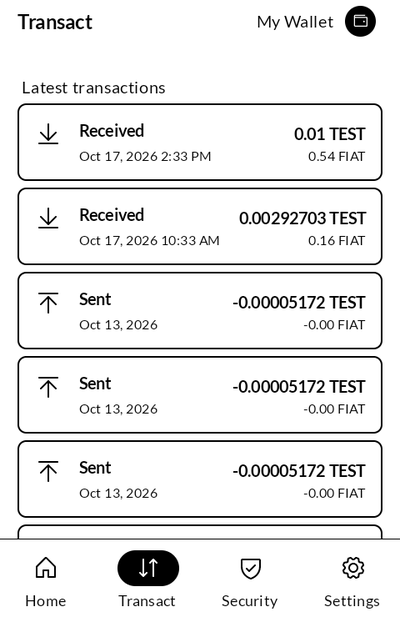
Bitcoin
A Bitcoin wallet for a Blockstream Jade, which keeps the keys and signs over Bluetooth. Send and receive, or hold two phones back to back to hand a payment request across. Bitcoin only, with no Lightning, Liquid or swaps; Blockstream's Green underneath.
Blockstream Jadeと使うビットコインのウォレット。鍵はJadeが持ち、Bluetoothで署名する。送る、受け取る、二台の電話を背中合わせにすれば、支払いの依頼を渡せる。ビットコインだけで、ライトニングもLiquidもスワップもない。中身はBlockstreamのGreen。
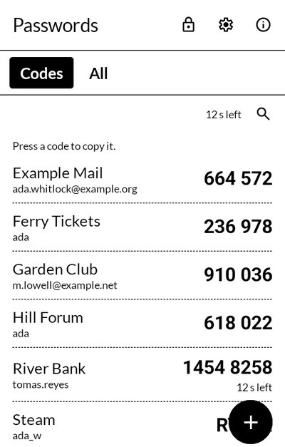
Passwords
Sign-ins and their two-step codes in a KeePass file, the same one KeePassXC opens on a computer. Press a code to copy it; fill sign-ins in other apps. It locks when the screen goes dark; a copy clears after thirty seconds. No internet.
ログイン情報と二段階認証のコードを、KeePassファイルに。パソコンのKeePassXCで開くのと同じファイル。コードは押せばコピー。ほかのアプリのログインも埋める。画面が暗くなると鍵がかかり、コピーは三十秒で消える。インターネットなし。
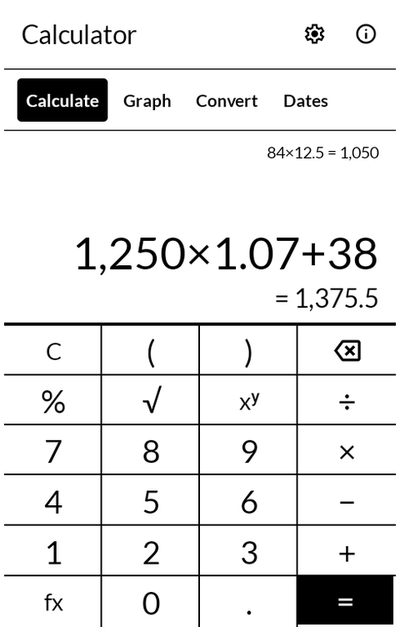
Calculator
Sums with brackets and the scientific functions a page away, a graph of up to three curves, and a programmer's calculator in four bases. Converts 24 kinds of unit, currency included, and counts days between dates. 0.1 + 0.2 comes to 0.3. Unitto underneath.
かっこ付きの計算、一枚めくれば関数電卓。曲線三本までのグラフと、四つの基数を並べるプログラマ電卓。単位換算は通貨を含めて24種、日付の間の日数も数える。0.1 + 0.2 は0.3になる。中身はUnitto。
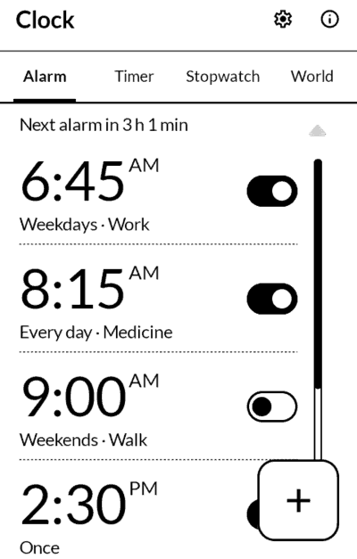
Clock
Alarms without a limit, in groups such as Office and Home that switch on, off or skip a day together. Timers that ring with the phone locked, a stopwatch, a world clock. With Sky, a line of weather as it rings.
数に限りのないアラームを、「仕事」「家」のようにまとめて、一度に入れたり切ったり一日休ませたり。ロック中でも鳴るタイマー、ストップウォッチ、世界時計。空模様と使えば、鳴る画面に天気が一行。
Reading, writing, listening
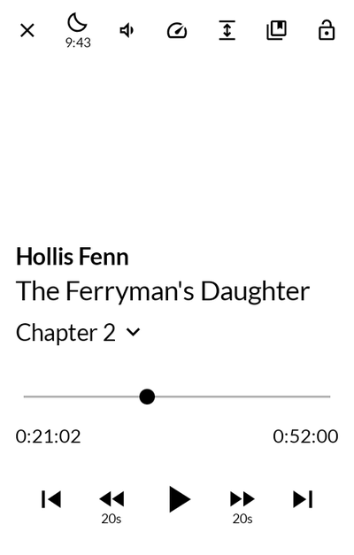
Audiobooks
An audiobook player. Point it at a folder of books, tell it once how they are laid out, and it keeps your place in each one. A single long recording opens as its chapters, and there is a sleep timer, playback speed and bookmarks.
オーディオブックのプレーヤー。本のフォルダを指し、並び方を一度教えれば、一冊ごとに読みかけの場所を覚えている。一本の長い録音も章ごとに開き、スリープタイマー、再生速度、しおりもある。
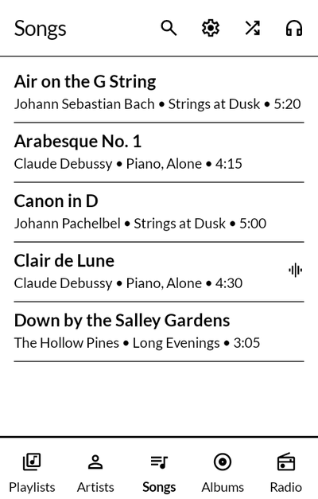
Music Box
A music player for a folder of your own music, a music server you run, internet radio and YouTube Music. Downloads stay on the phone as ordinary music files. Rename any song, album or artist, and heart the songs you love.
音楽プレーヤー。自分の音楽のフォルダ、自分で動かす音楽サーバー、ネットラジオ、YouTube Musicに。ダウンロードした曲は普通の音楽ファイルとして電話に残る。曲、アルバム、アーティストの名前は自由に変えられ、好きな曲にはハートを。
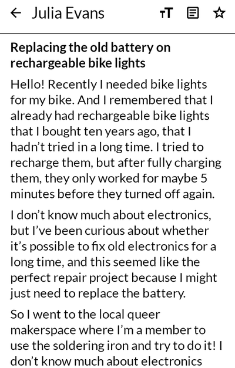
Feeds
Feeds read as plain text, with Gemini, gopher and Spartan alongside them, and podcasts played under their show notes and marked once heard; fetched on wifi, read with the radio off. The volume keys turn the page. No account; feeds come and go as OPML.
フィードを素のテキストで読む。Gemini・gopher・Spartanも並べて、ポッドキャストは番組ノートの下で再生し、聴き終えたものには印。取り込みはWi-Fiで、読むのは電波を切ってから。音量キーでページをめくる。アカウントは要らず、フィードはOPMLで出し入れする。
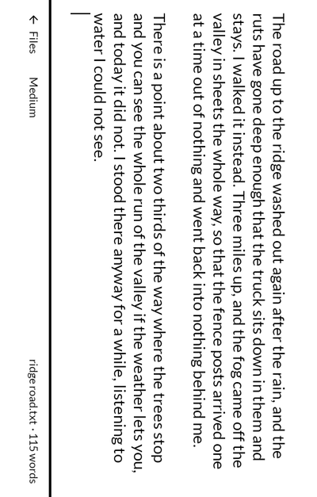
Typewriter
A text editor that opens in landscape and stays there, for writing with a keyboard connected to the phone. What you write is plain text, in a folder you choose. It saves when you pause, and never over a file that changed elsewhere.
横向きで開き、ずっと横向きのままのテキストエディタ。電話につないだキーボードで書くためのもの。書いたものは素のテキストで、選んだフォルダに。手を止めれば保存し、よそで変わったファイルの上には書かない。
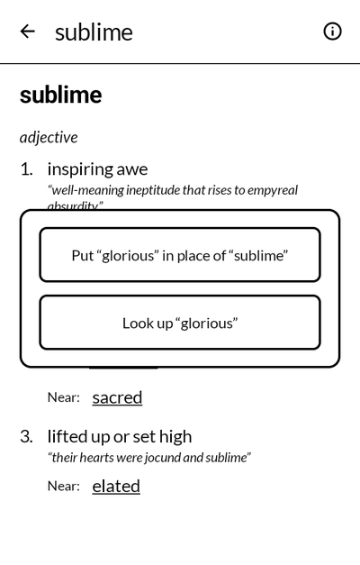
Dictionary
An English dictionary and thesaurus in the menu over selected text, in any app. Press another word and it goes back into what you were writing. Geese finds goose and stopped finds stop, among some 136,000 words, all on the phone.
英語の辞書と類語辞典。どのアプリでも、選んだ文字の上のメニューから開く。別の言葉を押せば、書いていた文にそのまま戻る。geeseからgoose、stoppedからstopも引ける。約十三万六千語、すべて電話の中に。
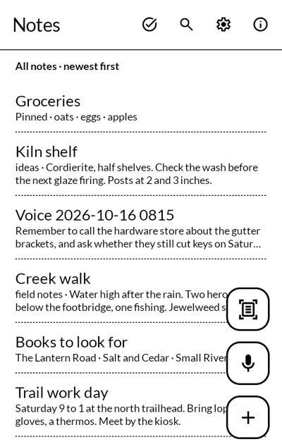
Notes
Notes, lists, voice notes and scanned pages, kept as plain Markdown files on your own Nextcloud or on the phone. A shared list can be ticked on one phone while added to on another. Voice notes are written down on the phone itself.
メモ、リスト、音声メモ、紙の読み取り。ただのMarkdownファイルとして、自分のNextcloudか電話の中に。共有したリストは、片方の電話で印をつけながら、もう片方で書き足せる。音声メモは電話の中で書き起こされる。
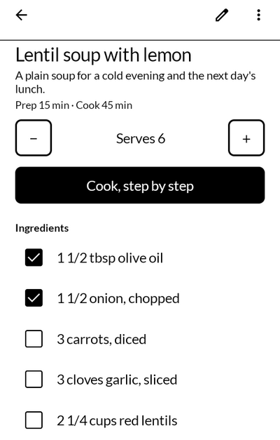
Recipes
A recipe book that keeps a recipe page's words, not the life story above them. Send what you lack to Notes as a shopping list, and cook a step to a screen with Clock timers. Your Nextcloud keeps a copy.
料理の手帳。レシピのページを共有すれば言葉だけを残し、前置きの身の上話は残さない。足りない材料は覚書へ買い物リストとして、作るときは一画面に一手順、時間は時計のタイマーで。自分のNextcloudにも写しを。
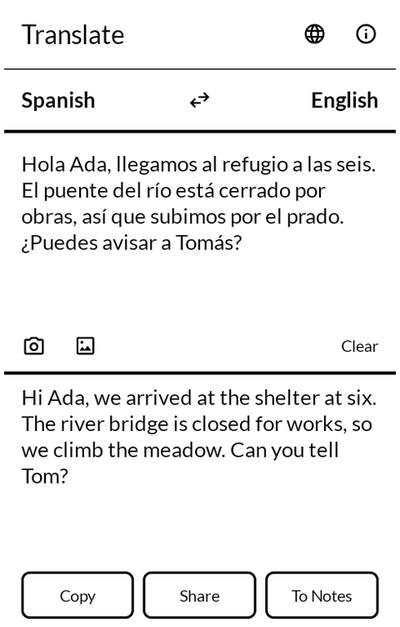
Translate
Translation between English and 59 languages, on the phone, in the menu over selected text beside Dictionary. Words in a picture too. Each language downloads once; nothing translated leaves the phone. A translation can be copied, shared or sent to Notes.
英語と59の言語のあいだの翻訳を、電話の中で。選んだ文字の上のメニューから、字引の隣に。写真の中の文字も。言語はそれぞれ一度だけダウンロード。訳す文は電話の外に出ない。訳はコピーも共有もでき、覚書へも送れる。
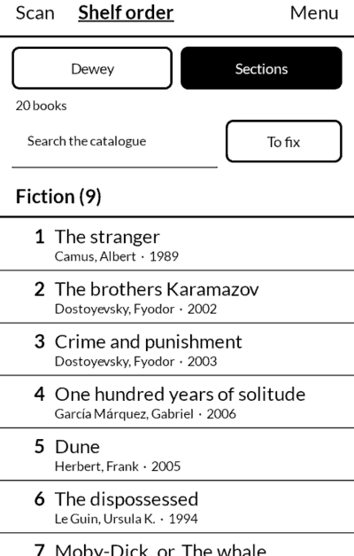
Shelf
Scan a book's barcode and Shelf finds its Dewey number and its place on your shelves, by number or in broad sections with Fiction first. Shared through Nextcloud, or saved as a spreadsheet. With Audiobooks, Listen opens a book you have a recording of.
本のバーコードを読むと、十進分類の番号と、棚のどこに戻すかを示す。番号順か、小説を先にした大まかな区分で。Nextcloudで共有、表計算のファイルにも書き出せる。耳読に録音があれば、「聴く」でその本が開く。
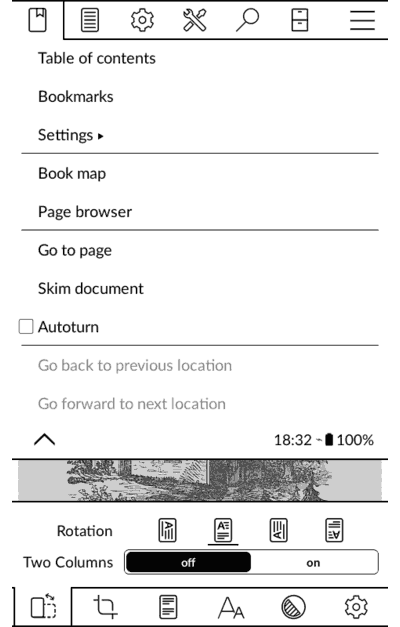
KOReader, Kompakt look
Not an app but a patch for KOReader, which already reads everything, so that it looks like the Kompakt's own apps: Lato, larger type and icons, taller rows, black lines. It needs KOReader's own build; the F-Droid one skips patches.
Outdoors
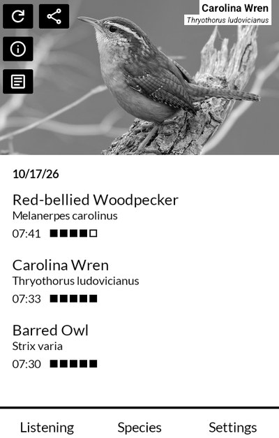
Birding
Names the birds it hears, offline, with BirdNET running on the phone itself. Where you are and the week of the year leave out birds that cannot be here. A bird's eBird and Wikipedia pages are a press away, opened in your browser.
聞こえた鳥の名前を告げる。オフラインで、BirdNETは電話の中で動く。今いる場所と一年のどの週かで、ここにいるはずのない鳥は外す。その鳥のeBirdとWikipediaのページはひと押しで、ブラウザに開く。
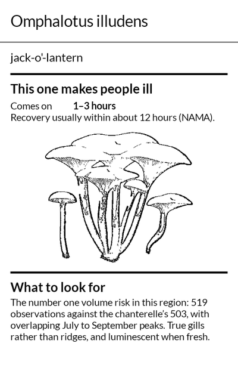
Mushroom Journal
Write a mushroom down while you are standing over it, and work out at home what it might be. A find can go to someone who knows, as a description and photographs. It narrows a list, never decides, and says nothing about eating one.
きのこの前に立ったまま書き留め、何なのかは家でゆっくり考える。見つけたものは、記述と写真にして詳しい人に送れる。候補を絞りはするが、決めはしない。食べられるかどうかには一切触れない。
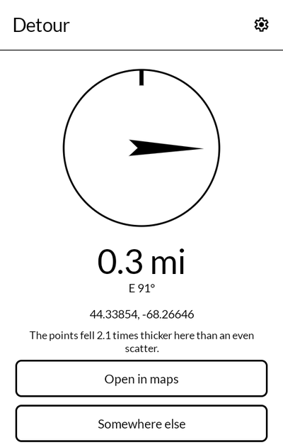
Detour
Press once and it picks somewhere near you to walk to, inside the distance you chose, with no particular reason to go there, and gives you an arrow and a distance to follow. There is no map; the coordinate opens in the phone's map app.
一度押せば、選んだ距離の内側で、近くのどこかを歩いて行く先に選ぶ。そこへ行く理由は特にない。あとは矢印と距離に従うだけ。地図はなく、座標は電話の地図アプリで開く。
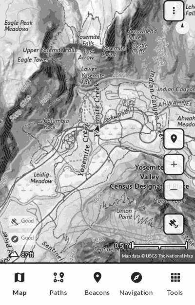
Topo
Maps for walking off the road: contours, trails, forest roads, public land and lot lines, offline once an area is downloaded. A Forage layer marks fruit and nut trees. Tracks go to CalTopo, and a .gpx from Files opens here.
道を外れて歩くための地図。等高線、山道、林道、公有地、地番の境界を、地域を一度ダウンロードすればオフラインで。「採集」の層には果樹や木の実のなる木。軌跡はCalTopoへ、棚の.gpxはここで開く。
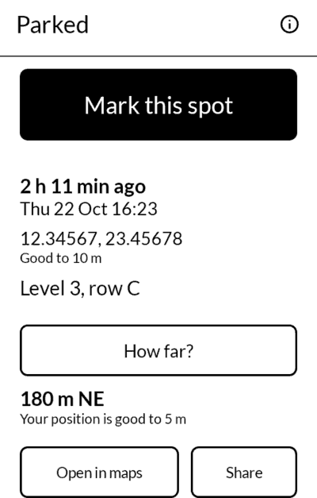
Parked
Remembers where you left the car. Press a button when you get out and the phone marks the spot; press another on the way back and it says how far and which way. No internet permission, and location only on a press.
車をどこに停めたかを覚えている。降りるときにボタンをひとつ押せば、その場所を記録する。戻るときにもうひとつ押せば、距離と方角を教える。インターネットの権限はなく、位置情報は押したときだけ使う。
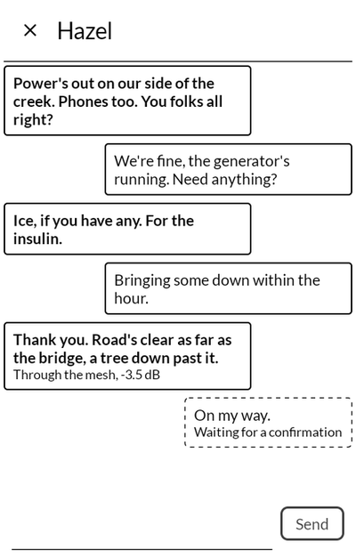
Mesh
A companion for MeshCore and Meshtastic LoRa radios. Messages go over Bluetooth to the radio beside you and out through a mesh that needs no towers, no carrier and no internet. Channels, their QR codes and the radio's settings are all in the app.
MeshCoreとMeshtasticのLoRa無線機のための相棒。メッセージはBluetoothで手元の無線機へ、そこから鉄塔も通信会社もインターネットもいらない網へ。チャンネルもそのQRコードも、無線機の設定も、アプリの中で。
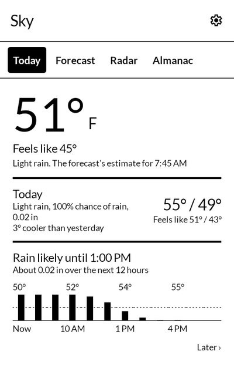
Sky
The days ahead, the rain radar, the moon and the sun's hours, and your own weather station if you have one. In the US, weather and wildfire alerts. Air quality too, modelled rather than measured. With Glance, the weather on the lock screen.
この先の数日、雨雲レーダー、月と太陽の出入り、それに自分の気象観測装置があればそれも。アメリカでは気象と山火事の警報も。大気の質も、測った値ではなくモデルの値で。一目と使えば、天気がロック画面に。
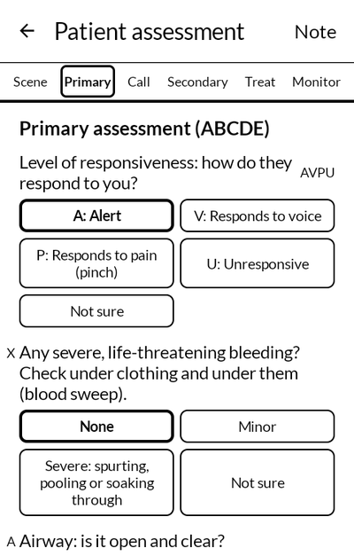
Field Kit
Thirty-six first-aid pages that open on what to do now, a patient assessment in the words the courses use, twelve knots, a compass with your position, SOS on the camera flash, and an emergency card Glance can show. No internet.
「まず何をするか」から開く三十六の救急ページ、講習の言葉どおりの傷病者評価、結び十二種、現在地つきのコンパス、カメラのフラッシュで送るSOS、一目に出せる緊急カード。インターネットなし。
Instruments
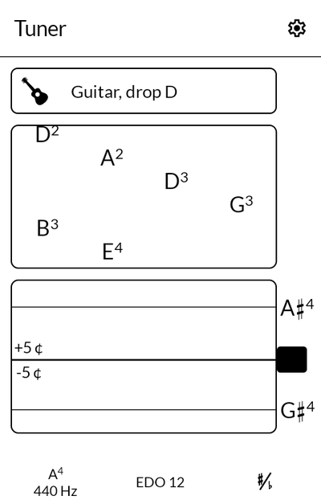
Tuner
A tuner, chromatic or by instrument, with a pitch plot, a cents readout and temperaments well past equal. The screen stays awake while you play. In tune is read from where the needle sits on the centre line, never from a colour.
チューナー。クロマチックでも楽器ごとでも。音高のグラフ、セント表示、平均律のはるか先までの音律。弾いている間、画面は消えない。合っているかは色ではなく、針が中心の線のどこにあるかで読む。
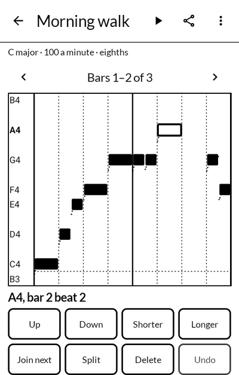
Hum
Hum or sing a tune and it is written down as notes on a piano roll, to fix there and send to a computer as MIDI or sheet music. A click can count you in. One line of melody; chords are not read.
鼻歌や歌を音符に書き取る。ピアノロールで直し、MIDIや楽譜としてコンピューターへ送れる。クリックで拍を数えて入ることもできる。旋律は一本だけで、和音は読まない。
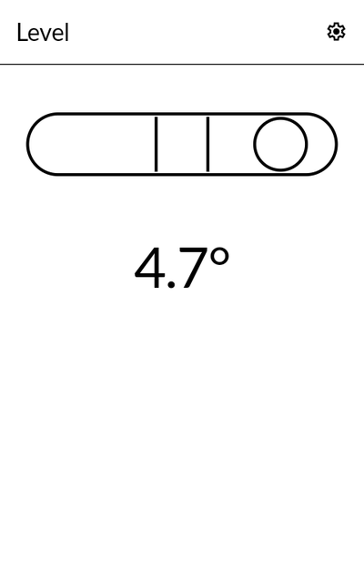
Level
A spirit level that knows whether it is lying flat or standing on an edge, and shows the right vial for each. It says level only when it is. Degrees or percent, calibrated for each way it is held, and a sound when level.
平らに置かれているか、縁で立っているかを自分で知り、それぞれに合った気泡管を見せる水準器。水平と言うのは、本当に水平のときだけ。角度でも勾配でも。持ち方ごとに較正でき、水平になれば音で知らせる。
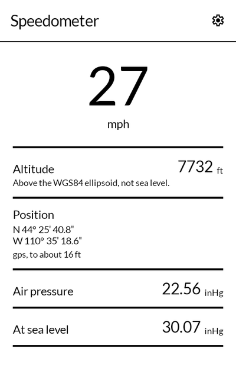
Speedometer
How fast you are going, how high you are, and what the air is doing. Press the speed and it fills the screen. No map, no history, and your position never leaves the phone. Not accurate enough to navigate by.
どれだけ速く進んでいるか、どれだけ高いところにいるか、空気がどうしているか。速度を押せば画面いっぱいに。地図も履歴もなく、居場所は電話の外に出ない。道案内に使えるほど正確ではない。
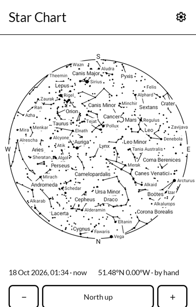
Star Chart
The sky over you, drawn the way a paper star atlas draws it, black on white: nine thousand stars, the constellations and the planets. Set any moment and any place to see what will be up. Tap anything for its altitude and bearing.
頭上の空を、紙の星図のように白地に黒で描く。九千の星、星座、惑星。好きな時と場所を決めれば、何が昇っているかが見える。どれかを押せば、その高度と方位が出る。
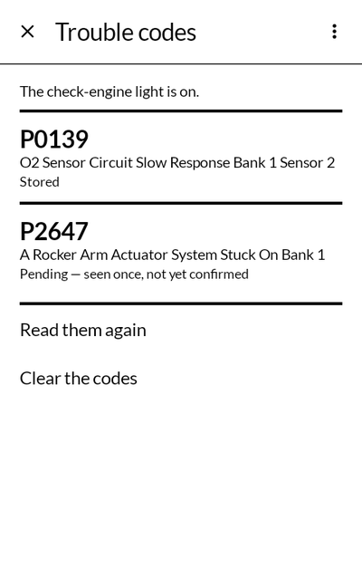
Car Check
What the check-engine light is on for, read through a Bluetooth OBD-II adapter. Each code says whether it is stored or only pending, and clearing them tells you when the car refuses. The codes can go to Calendar as a reminder or into Notes.
エンジン警告灯がなぜ点いているのかを、Bluetooth OBD-IIアダプタで読む。コードごとに記録済みか保留中かを示し、消去を車が拒んだときはそう伝える。コードは暦に予定として、覚書にメモとして残せる。
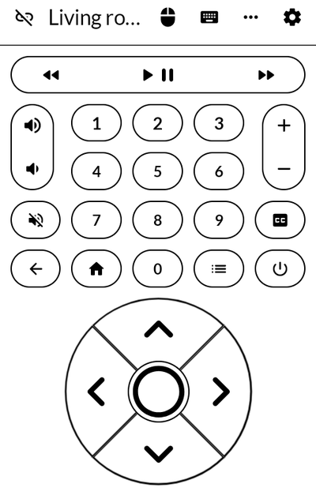
Remote
A Bluetooth remote, keyboard and mouse for a television, a media box or a computer. Nothing to install on the other end: it pairs as a keyboard does. A d-pad or a touchpad, media and channel buttons, and the volume keys put to work.
テレビ、メディアボックス、パソコンのための、Bluetoothのリモコン・キーボード・マウス。相手側に入れるものはない。キーボードと同じように繋がる。十字キーかタッチパッド、メディアとチャンネルのボタン、それに音量キーも使う。
Games
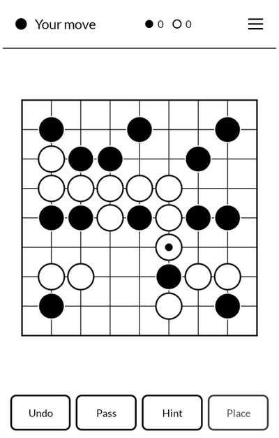
Go
A game of Go on a 9×9 board, against GNU Go or the person opposite, with handicaps, a hint when you want one, and the board counted at the end. Set up a position from a book and play it out.
九路盤の碁。相手はGNU Goか、向かいに座る人。置き碁、欲しいときのヒント、終局には盤面を数える。本に載った局面を並べて、続きを打つこともできる。
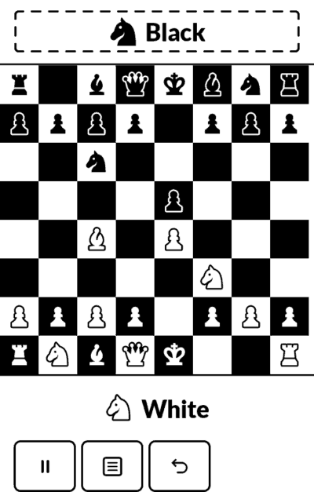
Chess+
The phone's own chess app, with a second player added: two people on one board, passing the phone back and forth between moves. Or play the computer at fourteen strengths. A move waits until you confirm it, and can be taken back even after checkmate.
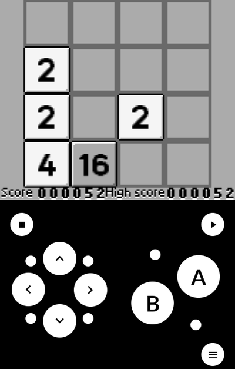
Handheld Games
Game Boy games, drawn in four greys for a screen that has no colour. The picture lands at exactly three times size, so nothing is resampled. Puzzle and turn-based games play well, and Zelda too; a game that scrolls, like Mario, does not.
ゲームボーイのゲームを、色のない画面のために四階調の灰色で。絵はきっかり三倍の大きさに収まるので、何も補間されない。パズルやターン制のゲーム、それにゼルダはよく遊べる。マリオのように画面が流れるものは向かない。
Solitaire
Klondike, FreeCell and Spider. Tap a card and it goes to the best place it can; tap again for the next. Nothing moves on its own. FreeCell deals are numbered as Microsoft's are, and a game under way survives a restart. No timer, no score.
Tarot
A card for the day, three spreads and a journal of readings, with Pamela Colman Smith's 1909 pictures in greys and a short meaning for each card, upright and reversed. The meanings say what a card is about; they do not predict anything.
Stop motion
One app for Android phones: the capture half of a stop-motion practice. The film is put together elsewhere.
Stop Motion
Stop-motion capture for Android phones; on the Xiaomi 17 Ultra it reaches all three rear lenses where other apps find one. The exposure locks for the whole film, with onion skin, drawn guides, an interval timer and RAW on every lens.
Androidの電話のためのコマ撮り。Xiaomi 17 Ultraでは、ほかのアプリが一つしか使えない背面の三つのレンズすべてに届く。露出は作品全体を通して固定。オニオンスキン、描き込めるガイド、インターバルタイマーつきで、どのレンズでもRAWで撮れる。